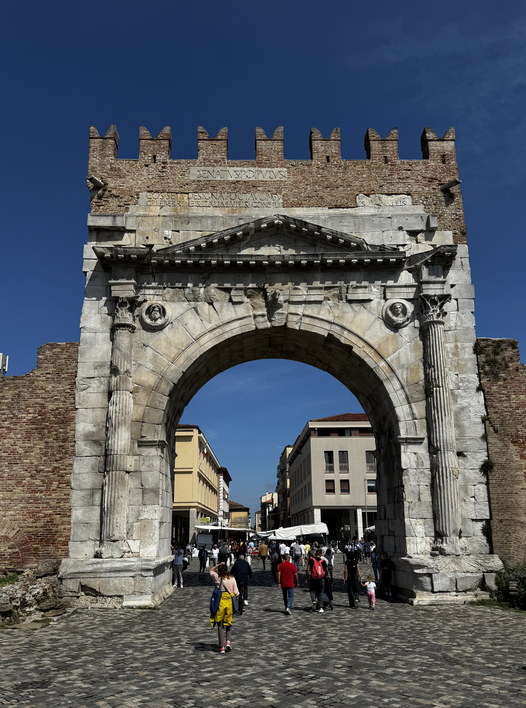
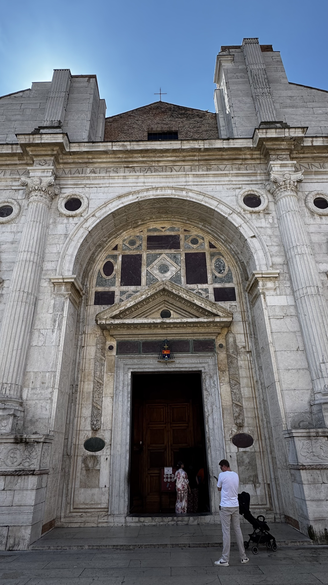
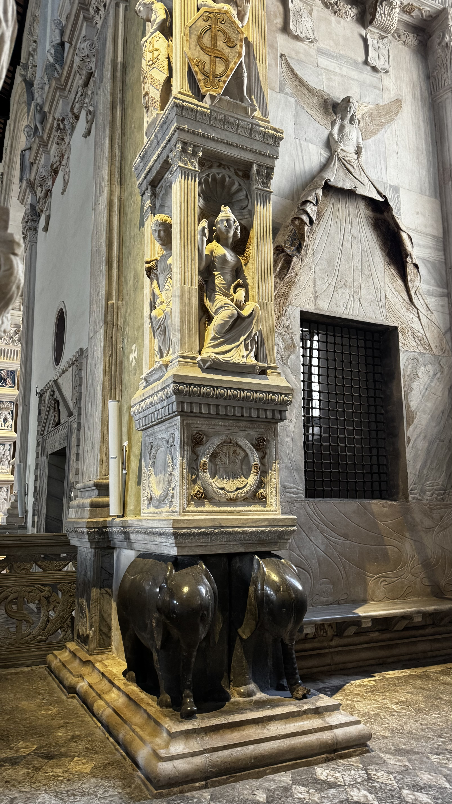
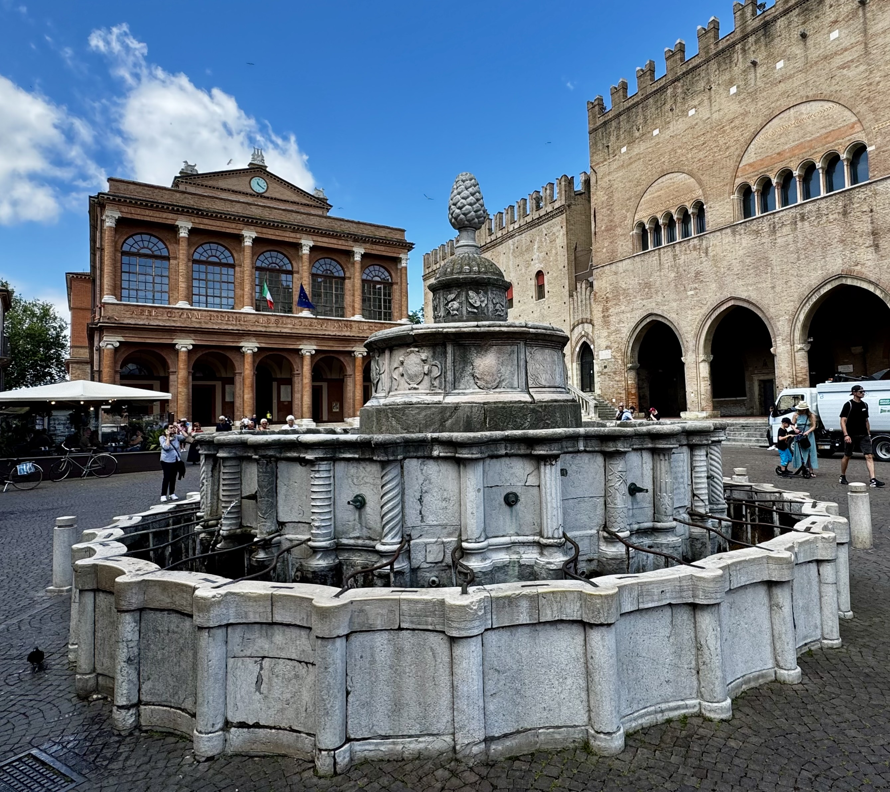
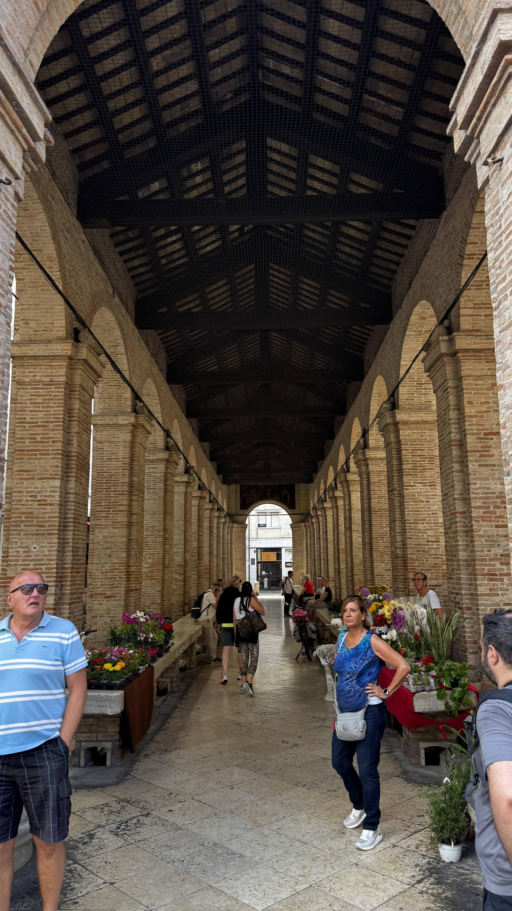
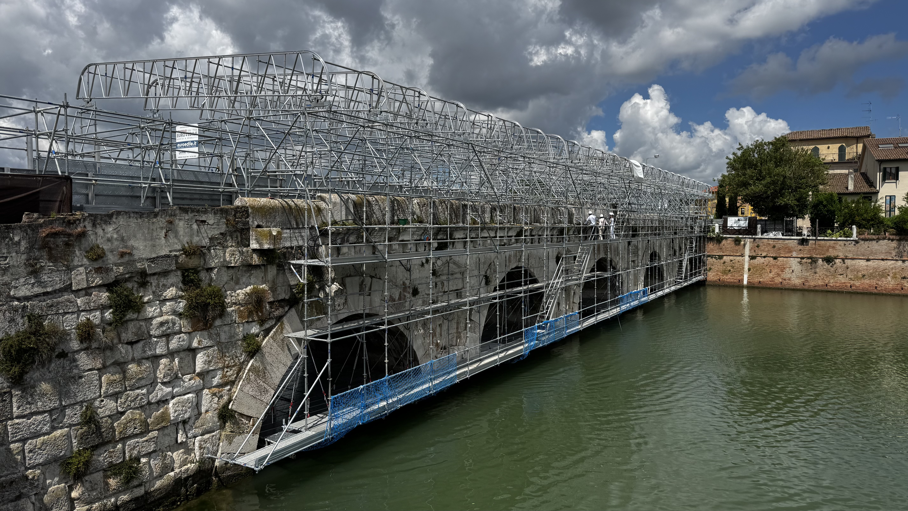

Alle 6 Stopps als Fußgänger-Route · öffnet in Browser oder Maps-App

Der Augustusbogen von Süden — die Inschrift SENATVSPOPVLVSQ… noch teilweise lesbar. Dahinter öffnet sich der Corso d'Augusto, die antike Hauptstraße.
Der Augustusbogen ist der älteste erhaltene Triumphbogen der Welt — und er steht schlicht mitten in einer Stadtstraße, als wäre das die normalste Sache. Errichtet 27 v. Chr., im Jahr der Konsolidierung der augusteischen Herrschaft nach Jahrzehnten der Bürgerkriege, markierte er das nördliche Stadttor von Ariminum. Hier trafen zwei der bedeutendsten Römerstraßen Italiens aufeinander: die Via Flaminia aus Rom, die genau hier endete, und die Via Aemilia, die von hier nordwestwärts nach Piacenza führte. Wer durch diesen Bogen trat, stand an einem der zentralen Knotenpunkte des Imperiums.
Architektonisch fällt sofort auf: der Bogen ist ungewöhnlich breit und hatte bewusst keine Türen — die Pax Romana braucht keine Schranken. Die vier Halbsäulen in korinthischer Ordnung tragen Reliefschilde mit den Symbolen der Schutzgötter: Jupiter, Apollo, Neptun und Minerva.
Anschließend dem Corso d'Augusto stadteinwärts folgen — das ist die antike Hauptstraße, der Decumanus Maximus. Die heutige Straße liegt exakt auf der römischen Trasse.

Die Marmorfassade — Albertis Triumphbogenmotiv zitiert bewusst den Augustusbogen 500 Meter weiter. Die Inschrift im Gebälk: MALATESTA PANDVLFI.
Von außen könnte man denken, hier stehe noch ein antikes Monument — und genau das war die Absicht. Der Tempio Malatestiano ist eine der radikalsten Ideen der Frührenaissance: Architekt Leon Battista Alberti hüllte eine bestehende gotische Franziskanerkirche vollständig in eine neue klassizistische Marmorhülle. Die Fassade mit dem Triumphbogenmotiv zitiert direkt den Augustusbogen — ein bewusster Dialog mit der Antike, 1500 Jahre später.
Auftraggeber war Sigismondo Pandolfo Malatesta (1417–1468), Herr von Rimini: Condottiere, Kunstmäzen, Machtstratege — und eine der skandalösesten Figuren des 15. Jahrhunderts. Er wollte eine dynastische Grabstätte und ein Monument seiner Herrschaft. Die Arkaden an den Seiten enthalten Marmorsarkophage seiner Hofgelehrten.

Innenraum — das Grabmonument auf dem Elefantensockel, dem Wappentier der Malatesta. Die bronzenen Elefanten tragen das gesamte Monument — ein Motiv das Sigismondo bewusst aus der Antike entlehnte.
Die Elefanten tauchen überall auf — an den Außenreliefs, als Sockelfiguren. Das Wappentier der Malatesta war in der Antike Symbol für Stärke, Gedächtnis und Loyalität. Sigismondo wählte es bewusst als dynastisches Zeichen. Innen ist das Grabmonument mit dem Elefantensockel das faszinierendste Einzelstück: Skulpturen in einer Mischung aus christlicher und antiker Bildsprache — für das 15. Jahrhundert hochgradig provokant.

Piazza Cavour — der Pignabrunnen (16. Jh.) im Vordergrund, rechts der Palazzo dell'Arengo (13. Jh.), links das Teatro Amintore Galli. Der Platz liegt exakt auf dem antiken Forum von Ariminum.
Die Piazza Cavour liegt exakt dort, wo im antiken Ariminum das Forum war. Das Mittelalter und alle folgenden Epochen haben diesen zentralen Platz einfach weiterbenutzt. Der Pignabrunnen in der Mitte — der Pinienzapfen als Bekrönung war ein altes Symbol der Stadtmacht — stammt aus dem 16. Jahrhundert. Das Teatro Amintore Galli links (1857) wurde im Zweiten Weltkrieg zerstört und 2018 wiedereröffnet.

Die Pescheria — die historische Fischhalle aus dem 16. Jahrhundert. Der überdachte Arkadengang war jahrhundertelang der zentrale Fischmarkt Riminis. Heute: Blumen- und Pflanzenmarkt.
Direkt an der Piazza liegt die Pescheria — die historische Fischhalle aus dem 16. Jahrhundert. Der lange überdachte Arkadengang mit den Rundbogenöffnungen und dem offenen Dachstuhl war bis ins 20. Jahrhundert der zentrale Fischmarkt der Stadt. Heute ist der Fischhandel längst woanders — die Halle dient als überdachter Marktplatz, hauptsächlich für Blumen und Pflanzen.
Das Caffè Cavour (Nr. 12) liegt direkt am Platz mit Tischen draußen — gut für Kaffee und succo di frutta bevor es weitergeht.
Die Burg war die Wohn- und Machtbasis Sigismondo Malatestas — desselben Mannes, der den Tempio Malatestiano bauen ließ. Architekt war Filippo Brunelleschi, der Erbauer der Florentiner Domkuppel, wenngleich der Bau nach seinem Tod fertiggestellt wurde.
Heute beherbergt die Burg das Fellini-Museum — weltweit einziges dezentralisiertes Museum, verteilt über 16 Etappen im Schloss, mit 33 Projektoren und über fünf Stunden audiovisuellem Material. Für Filminteressierte ein Erlebnis; für den Außenrundgang genügen die Burgmauern und der Graben.

Ponte di Tiberio im Sommer 2026 — vollständig eingerüstet. Die Dimension der antiken Konstruktion bleibt spürbar, der Bogen selbst kaum zu sehen.
Die Brücke wurde unter Augustus begonnen und unter Tiberius 21 n. Chr. fertiggestellt — fünf Bögen aus istrischem Kalkstein, die seit 2000 Jahren denselben Fluss überspannen. Kein Bogen ist je eingebrochen. Die Brücke überstand Überschwemmungen, Belagerungen und den Zweiten Weltkrieg.
Das Borgo San Giuliano war das alte Fischerviertel Riminis — einfache niedrige Häuschen, enge Gassen, einst bewohnt von Fischern und Handwerkern. Hier wuchs Federico Fellini auf. Die Atmosphäre dieser Gassen taucht immer wieder in seinen Filmen auf, besonders in Amarcord (1973).
Seit 2009 haben lokale Künstler großformatige Wandbilder an die Häuserfassaden gemalt — Szenen aus Fellinis Filmen, Traumbilder, Portraits. Ein Suchspiel durch die bunten Gässchen.
Gelateria Dolceneve Bio (Via S. Giuliano 31): eine der besten Gelaterie Riminis, bio, sehr cremig. Sa/So ab 11:00, werktags ab 15:00. Vormittags-Alternative: Gelateria La Romana auf dem Rückweg (Piazza Ferrari, tägl. ab 12:00).